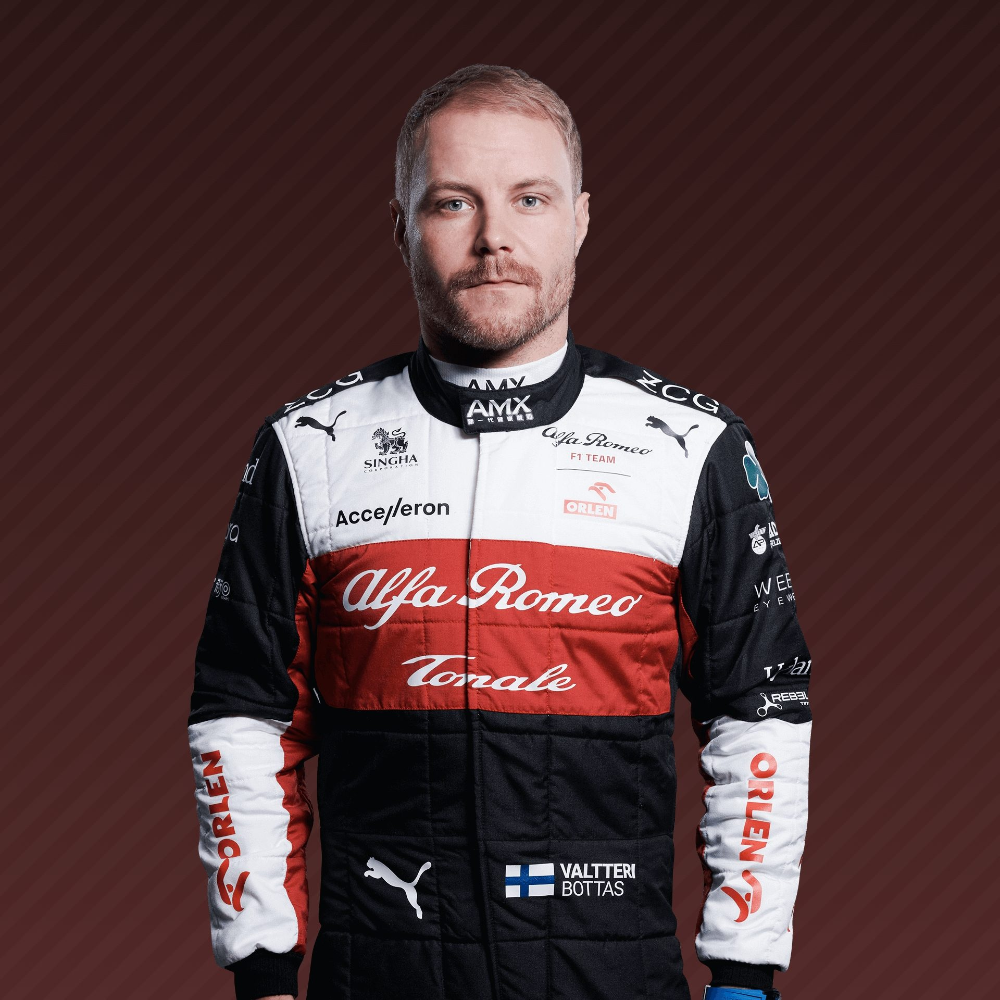
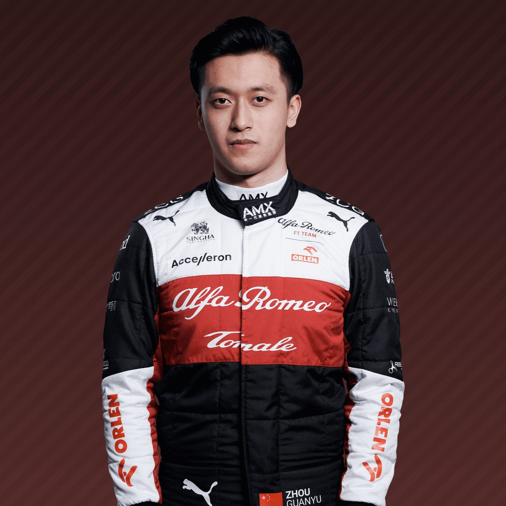

Mercedes-AMG Petronas F1 Team

- Székhely: Brackley, Egyesült Királyság (Karosszéria), Brixworth, Egyesült Királyság (Motorok)
- Nemzetiség: német
- Csapatfőnök: Toto Wolff
- Kasztni: W13

- Név: Lewis Hamilton
- Született: 1985. január 7.
- Nemzetiség: brit
- Rajtszám: 44
- Születési hely: Stevenage, Egyesült Királyság

- Név: George Russell
- Született: 1998. február 15.
- Nemzetiség: brit
- Rajtszán: 63
- King's Lynn, Egyesült Királyság
Scuderia Ferrari
- Székhely: Maranello, Olaszország
- Nemzetiség: olasz
- Csapatfőnök: Mattia Binotto
- Kasztni: F1-75

- Név: Charles Leclerc
- Született: 1997. október 16.
- Nemzetiség: monakói
- Rajtszám: 16
- Születési hely: Monte-Carlo, Monaco

- Név: Carlos Sainz Jr.
- Született: 1994. szeptember 1.
- Nemzetiség: spanyol
- Rajtszám: 55
- Születési hely: Madrid, Spanyolország
Oracle Red Bull Racing

- Székhely: Székhely: Milton Keynes, Egyesült Királyság
- Nemzetiség: osztrák
- Csapatfőnök: Christian Horner
- Kasztni: RB18

- Név: Max Verstappen
- Született: 1997. szeptember 30.
- Nemzetiség: holland
- Rajtszám: 1 (33)
- Születési hely: Hasselt, Belgium

- Név: Sergio Perrez
- Született: 1990. január 26.
- Nemzetiség: mexikói
- Rajtszám: 11
- Születési hely: Guadalajara, Mexikó
McLaren F1 Team
- Székhely: Woking, Egyesült Királyság
- Nemzetiség: britt
- Csapatfőnök: Zak Brown
- Kasztni: MCL 36

- Név: Lando Norris
- Született: 1999. november 13.
- Nemzetiség: brit
- Rajtszám: 4
- Születési hely: Bristol, Anglia

- Név: Daniel Ricciardo
- Született: 1989. július 1.
- Nemzetiség: ausztrál
- Rajtszám: 3
- Születési hely: Perth, Asztrália
BWT Alpine F1 Team

- Székhely: Enstone, Egyesült Királyság
- Nemzetiség: francia
- Csapatfőnök: Otmar Szafnauer
- Kasztni: A522

- Név: Esteban Ocon
- Született: 1996. szeptember 17.
- Nemzetiség: francia
- Rajtszám: 31
- Születési hely: Évreux, Normandia, Franciaország

- Név: Fernando Alonso
- Született: 1981. július 29.
- Nemzetiség: spanyol
- Rajtszám: 14
- Születési hely: Oviedo, Spanyolország
Scuderia AlphaTauri

- Székhely: Faenza, Olaszország
- Nemzetiség: olasz
- Csapatfőnök: Franz Tost
- Kasztni: AT03

- Név: Pierre Gasly
- Született: 1996. február 7.
- Nemzetiség: frnacia
- Rajtszám: 10
- Születési hely: Rouen, Franciaország

- Név: Yuki Tsunoda
- Született: 2000. május 11.
- Nemzetiség: japán
- Rajtszám: 22
- Születési hely: Sagamihara, Kanagava, Japán
Aston Martin Cognizant F1 Team
- Székhely: Silverstone, Egyesült Királyság
- Nemzetiség: britt
- Csapatfőnök: Mike Krack
- Kasztni: AMR22

- Név: Lance Stroll
- Született: 1998. október 29.
- Nemzetiség: kanadai
- Rajtszám: 18
- Születési hely: Montréal, Kanada

- Név: Sebastian Vettel
- Született: 1987. július 3.
- Nemzetiség: német
- Rajtszám: 5
- Születési hely: Heppenheim, Németország
Williams Racing

- Székhely: Oxfordshire, Egyesült Királyság
- Nemzetiség: britt
- Csapatfőnök: Jost Capito
- Kasztni: FW44

- Név: Alexander Albon
- Született: 1996. március 23.
- Nemzetiség: thai
- Rajtszám: 23
- Születési hely: London, Anglia

- Név: Nicholas Latifi
- Született: 1995. június 29.
- Nemzetiség: kanadai
- Rajtszám: 6
- Születési hely: Toronto, Kanada
Alfa Romeo F1 Team Orlen

- Székhely: Hinwill, Svájc
- Nemzetiség: olasz-svájc
- Csapatfőnök: Frédéric Vasseur
- Kasztni: C40

- Név: Valtteri Bottas
- Született: 1989. augusztus 28.
- Nemzetiség: finn
- Rajtszám: 77
- Születési hely: Nastola, Finnország

- Név: Zhou Guanyu
- Született: 1999. május 30.
- Nemzetiség: kínai
- Rajtszám: 24
- Születési hely: Sanghaj, Kína
Haas F1 Team
- Székhely: Kannapolis, Amerika (Fő), Banbury, Egyesült Királyság (Európai)
- Nemzetiség: amerikai
- Csapatfőnök: Günther Steiner
- Kasztni: VF-22

- Név: Mick Schumacher
- Született: 1999. március 22.
- Nemzetiség: német
- Rajtszám: 47
- Születési hely: Vufflens-le-Château, Vaud kanton, Svájc

- Név: Kevin Magnussen
- Született: 1995. október 5.
- Nemzetiség: dán
- Rajtszám: 20
- Születési hely: Roskilde, Dánia